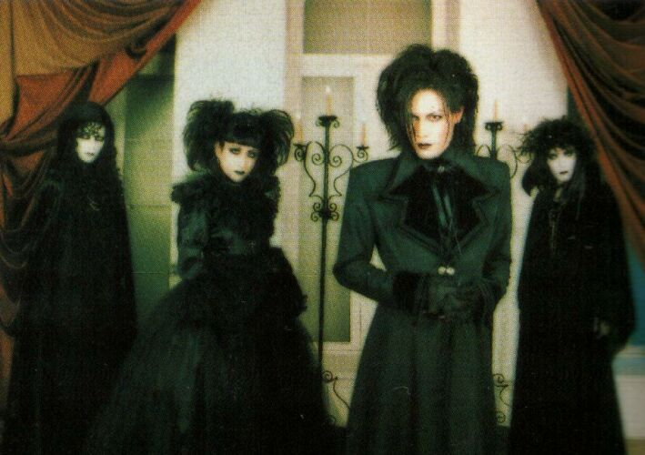

.jpg)
Sobre a Banda
MALICE MIZER (マリスミゼル; Marisu Mizeru ) foi uma das bandas de visual kei mais influentes e populares. A banda esteve ativa de janeiro de 1992 a dezembro de 2001.Formada por Mana e Közi , o nome da banda significa "malícia e miséria", extraído de "nada além de um ser de malícia e miséria" — sua resposta à pergunta "o que é humano?".
Suas músicas e temas iniciais eram caracterizados por fortes influências francesas e clássicas, afastando-se posteriormente do romantismo francês deliberado e incorporando aspectos gótico-vitorianos após diversas tragédias que se abateram sobre a banda. Apesar dos arquétipos declarados, o Malice Mizer é mais reconhecido como uma entidade completamente original.
O Malice Mizer é tão famoso por sua música quanto por seus shows ao vivo, apresentando suntuosos trajes e cenários históricos, curtas peças de teatro mudo que preludiam diversas músicas, coreografias excêntricas e até mesmo um momento particularmente notável em que o vocalista desce à Terra (o palco) como um anjo caído, apenas para ascender novamente ao final do show.
Ao longo de sua história, a banda passou por diversas formações e três mudanças drásticas de imagem.
"Ser humano não é nada além de um ser de Malícia e Miséria."— Malice Mizer em uma entrevista.
Eras da Banda:
A era indie de Malice Mizer (1992–1994)
.jpg)
Mana e Közi formaram o Malice Mizer em 1992 com Tetsu nos vocais, Mana e Közi nas guitarras/sintetizadores, Yu-ki no baixo e Gaz na bateria. Desde o início, a banda estabeleceu sua marca registrada: o som de "guitarras gêmeas", onde duas guitarras tocam melodias diferentes, criando polifonia. O som do Malice Mizer durante a era Tetsu era uma mistura de rock, gótico do início dos anos 80 e fortes influências clássicas. Seu primeiro lançamento oficial foi a música "Speed of Desperate", na coletânea Brain Trash , de 1993. Antes disso, eles haviam lançado uma fita demo chamada Sans Logique , que não continha vocais. Pouco depois do lançamento de Brain Trash , Gaz deixou a banda para se juntar ao Kneuklid Romance, enquanto o baterista do Kneuklid Romance, Kami , por sua vez, se juntou ao Malice Mizer. Em 1994, a banda lançou seu primeiro álbum, Memoire, pelo selo independente recém-fundado por Mana, Midi: Nette. Pouco tempo depois, a banda relançou o álbum com uma faixa bônus adicional, "Baroque", sob o título Memoire DX . Apenas alguns dias depois, o vocalista Tetsu deixou a banda. Embora os motivos exatos sejam desconhecidos, Tetsu seguiu uma direção diferente em seu trabalho e alguns dizem que foi porque ele não gostava da imagem extravagante da banda. O uso contínuo de suas letras em músicas que a banda continuou a apresentar com vocalistas posteriores sugere uma separação amigável.
Era Gackt; Viagem e Merveilles (1995–1999)

Em 1995, após um ano de inatividade, o Malice Mizer recrutou Gackt como seu novo vocalista. Com um novo conceito criado por Mana, a música da banda tornou-se mais voltada para o rock progressivo, incorporando elementos clássicos e eletrônicos ainda mais marcantes. Visualmente, a banda abandonou o visual gótico dos anos 80 em favor de figurinos históricos coloridos, sempre com um toque gótico. Em 1996, o Malice Mizer lançou seu segundo álbum, Voyage ~Sans Retour~. A banda tornou-se cada vez mais popular e, em 1997, assinou com a Nippon Columbia, onde lançou diversos singles de sucesso, um curta-metragem ( Bel Air ~Kuuhaku no Shunkan no Naka De~ de L'image ) e, em 1998, seu terceiro álbum, Merveilles. A banda chegou a ter seu próprio programa de rádio nessa época e fez um show de dois dias no Nippon Budokan, que utilizou um grande prédio como cenário e contou com performances teatrais incríveis; cada membro apresentava uma esquete com outro membro individualmente. Foi um enorme sucesso e foi lançado em vídeo como Merveilles l'espace. Em janeiro de 1999, no auge do sucesso do Malice Mizer, Gackt deixou a banda repentinamente e, apenas quatro meses depois, lançou seu primeiro álbum solo. Há muitos rumores circulando sobre o motivo de sua saída, mas nenhum foi confirmado até o momento. O Malice Mizer deixou a Columbia Records pouco depois e retornou à Midi:Nette.
Poucos meses após a saída de Gackt, o baterista Kami faleceu de uma hemorragia subaracnoide em 21 de junho de 1999, deixando para trás algumas músicas, que a banda acabou lançando como parte do EP/box de vídeos Shinwa , composto por duas músicas compostas por Kami e uma faixa curta, "Saikai", escrita pela banda. Kami nunca foi substituído; a partir de então, o Malice Mizer passou a utilizar apenas bateristas de apoio (na maioria das vezes Shue, que não apareceu nos últimos videoclipes da banda, nem foi creditado) e Kami passou a ser creditado como "parente de sangue eterno" em todos os seus lançamentos futuros. Devido à morte prematura de Kami e outros fatores, a banda decidiu mudar sua imagem e música.
Era Klaha; Bara no Seidou (2000–2001)
No segundo semestre de 1999 e início de 2000, o Malice Mizer — ainda sem um vocalista oficial — lançou vários singles e começou a trabalhar em um novo álbum. Eventualmente, recrutaram Klaha (nome verdadeiro Masaki Haruna), vocalista da banda darkwave Pride of Mind. Nessa época, a banda havia abandonado o som pop mais leve da era Gackt em favor de uma mistura dramática de música clássica, gótico e heavy metal, adotando também um elaborado visual gótico fúnebre. No verão de 2000, lançaram o que seria seu último álbum, Bara no Seidou, seguido por um show ao vivo espetacular e teatral, com pirotecnia, um coral de freiras com véu e uma catedral em miniatura como cenário. Em 2001, o Malice Mizer estrelou um longa-metragem de vampiros (Bara no Konrei ~ Mayonaka ni Kawashita Yakusoku~) e lançou mais três singles: "Gardenia", "Beast of Blood" e "Garnet ~Kindan no Sono E~". "Gardenia" e "Garnet" apresentavam um tom consideravelmente mais leve do que o álbum anterior, sinalizando o início de uma nova era para a banda. No entanto, os membros da banda decidiram seguir caminhos separados em 2001, deixando mensagens de dissolução em seu site oficial, Miroir, que ainda pode ser acessado hoje. A separação foi considerada um "hiato", para não excluir a possibilidade de uma futura reunião.
Curiosidades da banda:
- 'SPEED OF DESPERATE' foi o primeiro lançamento oficial do Malice Mizer, e 'Garnet～禁断の園へ～' foi o último lançamento oficial do Malice Mizer antes de seu hiato indefinido.
- Cada vez que você ouve Malice Mizer, Mana leva um pedaço da sua alma.
- O videoclipe de "Gardenia" é considerado material perdido. Isso porque temos apenas cerca de 3 minutos do vídeo, que tem 5 minutos de duração. Esses 3 minutos estão no YouTube, gravados por alguém durante uma entrevista que incluía o videoclipe. Nunca saberemos o que aconteceu com o vídeo completo.
- Mana ofereceu a Közi a posição de vocalista após o término de Klaha, mas ele recusou.
- Só passaram apenas três vocalistas durante o período ativo da banda.
"A banda convida o ouvinte a refletir, não apenas a escutar.."— Observação comum entre fãs.